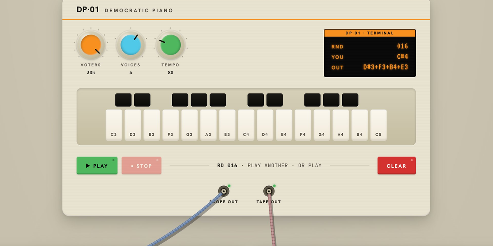
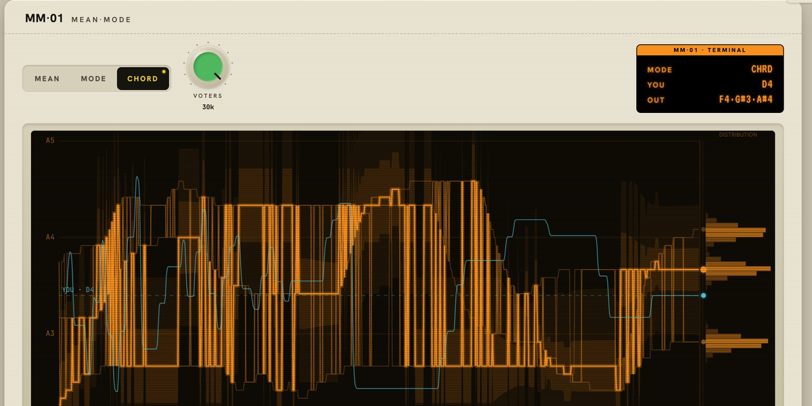
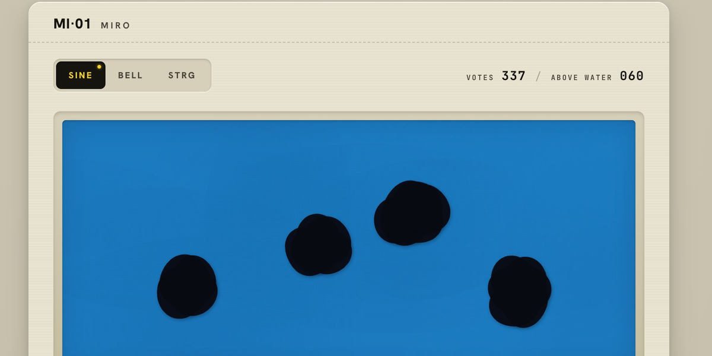
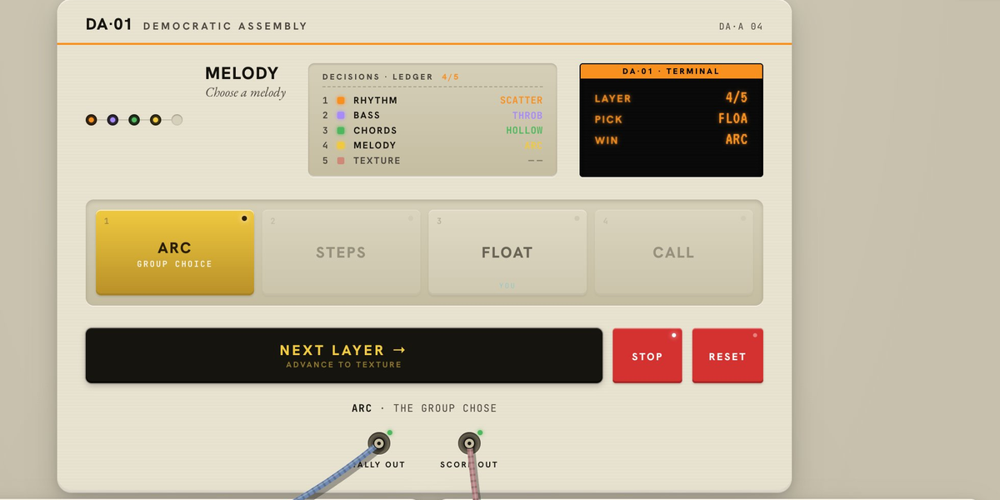
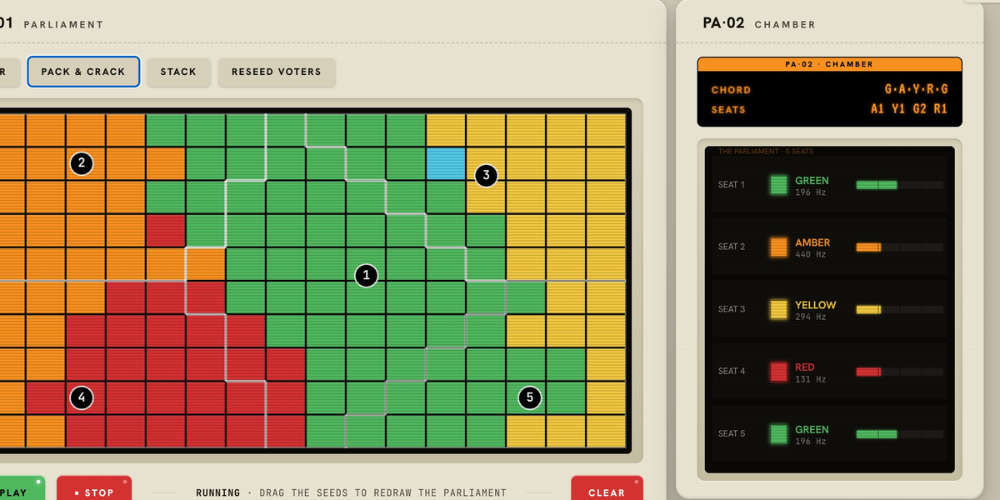
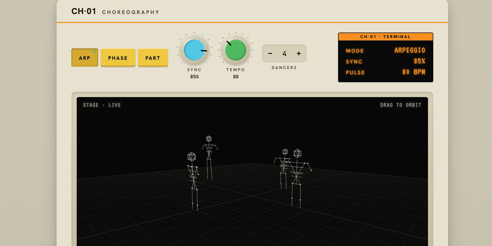

I've been thinking for a while now about how we might be able to create music democratically. Where voting choices could be built into musical instruments. Where the resulting music could be collectively owned.
What follows is a set of prototypes for communal composition. Models for how large groups of people might create and own music together using democratic decision making. Each one explores a different mechanism: averaging, spatial voting, electoral systems, embodied representation. They are working demonstrations.
None of these are finished pieces of music. They are instruments you can play with. All of them are single player for now, though they all have ways of tallying votes. Hope you enjoy them.
— Sam Vance-Law
Made together. Heard together. Owned together.





